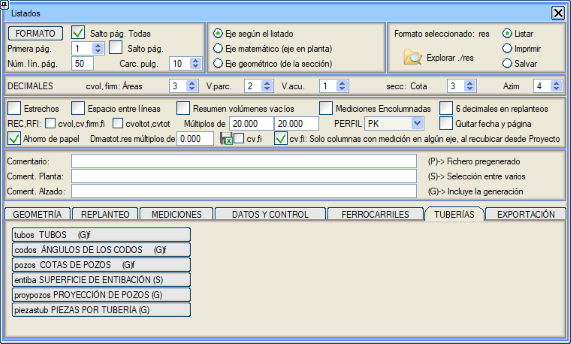
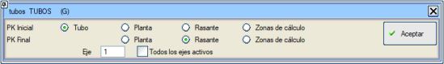
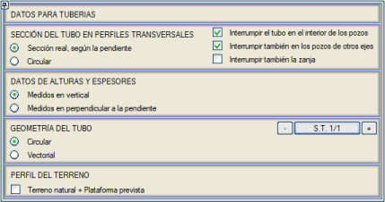
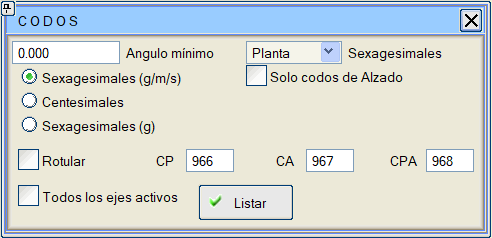
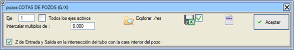

| |
|
BORU HATTI RAPORLARI
|
Bu belgede, boru hattı projelerine özgü tüm raporlar toplanmıştır: 
Borular BORULAR raporu (tubos.res), her bir borunun plandaki (2D) ve gerçek (3D) uzunluklarını, ait olduğu grubu, ayrıca çap, et kalınlığı, tip, malzeme ve açıklamasını listeler. Projenin tüm aktif güzergahları için birleşik bir rapor çıkarmak mümkündür. Güzergah numarasını içeren ilk bir sütun bulunur. Rapor tüm aktif güzergahlar için oluşturulduğunda, güzergah değiştirilirken sayfa sonu yapılmaz, sadece önceden belirlenmiş sayfa başına maksimum satır sayısı aşıldığında yapılır. 
Raporun başlangıcını yorumlamak için başlangıç KM'si seçilebilir:

Bu menüye Boykesit > Boru Hattı Verileri'nden erişilebilir. Tüm aktif güzergahlar listelendiğinde, her bir boru ile birlikte güzergahın adı da listelenir. Dirsek Açıları

DİRSEK AÇILARI raporu (codos.res) şunları içerir:
Planda belirli bir dirsek seçilmemiş olsa bile, uyum sağlayan bir dirsek olup olmadığını görmek için gerçek (3D) açı da kullanılarak arama yapılır ve bağlayıcının adı ve teorik açısı da yazdırılır. Baca Kotları BACA KOTLARI raporu (pozos.res), gömülü veya destekli boru hattı kesiti durumunda, bacaları ve rögarları içerir. Bu raporun sonuçlarında, her bir bacaya giren ve çıkan borunun çapını elde ederiz. 
Rapor, her bir güzergah için ayrı ayrı veya tüm aktif güzergahların birleşimi olabilir ve baca ile rögarların adını ve KM'sini, kapak ve taban kotlarını, giriş ve çıkış kotlarını, arazi kotunu, kırmızı kot farkını, giriş ve çıkış eğimlerini, (X,Y) koordinatlarını, yüksekliği, baca çapını veya rögar uzunluğunu, rögar genişliğini, birikimli beton hacmini, açıklamayı, çapı, baca/rögar duvar kalınlığını, taban kalınlığını, eksantrikliği ve azimutu gösterir. Birikimli beton hacminin yanına, bacalar ve rögarlar tarafından işgal edilen birikimli hacim de eklenir (iç boşluk düşülmeden). Ayrıca, bir değerin katları olan kırmızı kot noktalarını, KM'yi, kırmızı kotu, arazi kotunu, kırmızı kot farkını, eğimi ve eksendeki (X,Y) koordinatlarını yazdırarak, bacalar arasına aralıklar ekleme imkanı da sunar. Belirli bir mesafeden daha yakın olan bacalar yazdırılmaz. Giriş ve çıkış kotlarını, borunun bacanın iç yüzeyiyle kesişiminde listeleme imkanı. Mevcut güzergahtan geçen Diğer güzergahların bacalarını içerir. Raporun başlık metinlerini düzenlemek ve raporun sütunlarından herhangi birini etkinleştirmek/devre dışı bırakmak suretiyle özelleştirilmiş raporlar oluşturmak mümkündür. İksa Yüzeyi İKSA YÜZEYİ raporu (entiba.res), iksa kalınlığı beyan edilen ve edilmeyen bölgeler arasında ayrım yaparak, kısmi ve birikimli iksa yüzeylerini listeler. Baca İzdüşümü Bir güzergah için, diğer aktif güzergahların bacalarının o güzergah üzerine izdüşümünü çıkarmayı sağlar. Boru Başına Parçalar Dirseklerin .dip tablosundaki elemanları ve birleştirdikleri boruları listeler. Bu rapor, tüm aktif güzergahlar için yapılabilir. Kısa: kısaltılmış bir rapor oluşturmak için. |